Capítulo 8. DSPy en análisis de binarios: embeddings de código y razonamiento con LLM
Este es el capítulo diferencial del libro. Lleva DSPy a un dominio donde el dato de entrada es, por definición, adverso —un binario que puede ser malware— y donde el estado del campo se ha desplazado en los últimos años. El análisis de malware abandonó la conversión de binarios en imágenes en favor de embeddings de código que capturan semántica de ejecución, y de modelos de lenguaje que razonan sobre el binario. DSPy encaja aquí sin fricción, porque su oficio es justo orquestar llamadas a LLM y trabajo con embeddings, no entrenar redes.
El capítulo fija primero la frontera entre orquestación y entrenamiento; repasa como nota histórica la representación visual y su defecto; presenta la línea central —similitud de código binario y razonamiento con LLM—; construye un pipeline DSPy que reutiliza el RAG de arXiv del capítulo 7; y conserva la vía de grafos como complemento, junto con los modelos pequeños en el edge. Las cifras salen del código y aparecen como marcadores.
Orquestación, historia y el problema de la representación
Conviene una honestidad de partida: DSPy no entrena redes neuronales. No ajusta los pesos de un codificador de código ni de una red de grafos; orquesta llamadas a modelos —de lenguaje y de embeddings— y optimiza los prompts que las gobiernan. La frontera importa porque este capítulo usa componentes que sí se entrenan —un codificador que produce embeddings de funciones, una red de grafos sobre el flujo de control—, y conviene no confundir la aportación de DSPy —la orquestación y el razonamiento— con lo tomado prestado —las representaciones—.
Esa división del trabajo es, además, la adecuada. El codificador aprende a representar el binario una vez, de forma costosa; DSPy compone esas representaciones con razonamiento de LLM y ajusta los prompts sin tocar los pesos. Donde aparezcan GATv2, un codificador de código o cualquier encoder externo, el texto lo señalará con claridad, para que el lector sepa qué se entrena y qué se orquesta.
De la imagen de malware a los embeddings.
Durante años, una técnica popular convirtió el binario en una imagen —cada byte, un píxel— y aplicaba una red convolucional como si clasificara fotos (Nataraj et al. 2011). La idea era seductora por reutilizar la visión por ordenador, pero adolece de un defecto de fondo: viola el principio de localidad. En una imagen natural, los píxeles vecinos están relacionados; en un binario linealizado a píxeles, dos bytes contiguos pueden pertenecer a instrucciones sin relación, y la proximidad espacial que la convolución explota es un artefacto, no una señal (Brosolo et al. 2025).
Por eso el campo se desplazó hacia representaciones que respetan la estructura del programa: los opcodes, el flujo de control, la representación intermedia. La visión queda como nota histórica —ilustrativa de un callejón—, y la línea central del capítulo la sustituyen los embeddings de código y el razonamiento con LLM, que sí capturan semántica de ejecución.
El problema central: cómo representar un binario.
El reto de fondo del análisis de binarios no es el algoritmo, sino la representación: cómo convertir una secuencia de bytes en algo analizable. La elección de representación determina qué se puede aprender, porque fija qué estructura del programa queda visible y cuál se pierde. El callejón de la imagen (sección 8.1) fue, en el fondo, una mala representación: linealizó el binario a píxeles y borró su estructura.
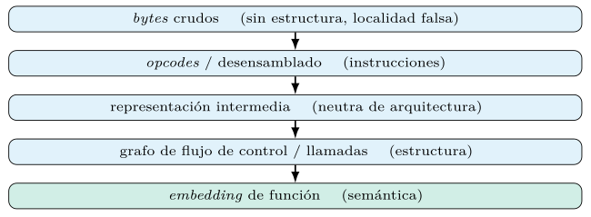
La figura 8.1 ordena las representaciones por la estructura que recuperan. Los bytes crudos no tienen ninguna —la localidad es falsa—; el desensamblado recupera las instrucciones; la representación intermedia las abstrae de la arquitectura; el grafo de flujo de control expone la estructura de ejecución; y el embedding de función condensa la semántica en un vector. Subir por la escalera cuesta análisis —desensamblar, levantar, construir el grafo—, pero cada peldaño hace visible una estructura que el modelo puede aprovechar.
La lección, otra vez la de Sutton (capítulo 1) (Sutton 2019), es sutil aquí. No se trata de codificar a mano rasgos del binario —eso es ingeniería de características frágil—, sino de elegir una representación que preserve la estructura para que el aprendizaje la explote. La representación correcta no resuelve la tarea, pero una incorrecta la hace imposible, y ese es el punto de partida del capítulo.
Desensamblado: el primer obstáculo.
Antes de cualquier representación rica hay que desensamblar, y desensamblar no es trivial. En arquitecturas de instrucción de longitud variable —como x86—, dónde empieza una instrucción depende de dónde empezó la anterior, y un byte puede interpretarse como código o como dato según el camino que lo alcance. El desensamblado es, en el caso general, un problema sin solución perfecta, y los desensambladores combinan barrido lineal y recursivo con heurísticas.
El malware agrava el problema a propósito. Técnicas de ofuscación —instrucciones solapadas, saltos calculados, código que se desempaqueta en tiempo de ejecución— buscan justamente confundir al desensamblador, de modo que el análisis estático vea algo distinto de su ejecución real. Un binario empaquetado no revela su código real hasta que corre, y su desensamblado estático es, en el mejor caso, incompleto (sección 8.6).
La consecuencia para un sistema con DSPy es que la calidad del análisis está acotada por la del desensamblado que lo alimenta. DSPy orquesta el razonamiento sobre el desensamblado, pero no lo produce: ese trabajo lo hacen herramientas especializadas —objdump, Ghidra, radare2—, que el flujo invoca como herramientas (capítulo 7). Reconocer este límite evita atribuir al razonamiento fallos que nacen, en realidad, de un desensamblado pobre.
Representaciones intermedias y la neutralidad de arquitectura.
El desensamblado es específico de cada arquitectura: el ensamblador de x86 no se parece al de ARM, aunque ambos binarios provengan del mismo código fuente. Para analizar a través de arquitecturas —un mismo malware compilado para varias plataformas—, conviene levantar el desensamblado a una representación intermedia neutra, que abstrae los detalles del juego de instrucciones y conserva la semántica de la operación.
Esta abstracción es la que permite la similitud entre arquitecturas (sección 8.2): dos funciones compiladas para x86 y ARM, ilegibles como ensamblador comparado, quedan próximas en la representación intermedia porque hacen lo mismo. Los analizadores modernos levantan a una representación intermedia —la de LLVM, o las de los marcos de análisis binario— antes de construir el grafo o el embedding, justamente para ganar esa neutralidad.
Para DSPy, la representación intermedia es una entrada más rica que el ensamblador crudo: un módulo de razonamiento alimentado con la representación intermedia de una función razona sobre su semántica sin atarse a una arquitectura, y un embedding derivado de ella generaliza a través de plataformas. El levantamiento, como el desensamblado, ocurre fuera de DSPy (sección 8.1); el flujo consume su salida.
BCSA: embeddings de código y similitud de funciones
El análisis de similitud de código binario (BCSA) responde a una pregunta operativa: ¿se parece esta función a otra ya conocida —una vulnerabilidad, una familia de malware—? La respuesta moderna proyecta cada función a un embedding que captura su semántica, de modo que funciones equivalentes, aunque compiladas distinto, quedan próximas en el espacio vectorial. El precursor derivaba el embedding del grafo de flujo de control (Xu et al. 2017); los métodos recientes aprenden representaciones de funciones sin ajuste fino por tarea (Gu et al. 2022) y escalan a repositorios enormes con embeddings conscientes de la función (Liu et al. 2025).
La conexión con DSPy es directa: estos embeddings alimentan una recuperación por similitud —la misma maquinaria del capítulo 3—, sobre la que un LLM razona. El codificador de código se entrena aparte; DSPy lo trata como un embedder más y compone su salida con el razonamiento.
De la instrucción a la función: embeddings de código.
Antes de representar una función entera conviene representar sus piezas. La línea que llevó a los embeddings de código adaptó las ideas del procesamiento de lenguaje al ensamblador: una instrucción es como una palabra, una secuencia de instrucciones como una frase, y se aprenden embeddings de instrucción por el contexto en que aparecen, al estilo de los modelos de palabras. El salto posterior trató el ensamblador como un lenguaje propio y aprendió representaciones de funciones sin ajuste fino por tarea (Gu et al. 2022).
El reto que distingue al ensamblador del lenguaje natural es la normalización. Los registros concretos, las direcciones absolutas y los desplazamientos varían entre compilaciones de la misma función, y tratarlos como tokens literales infla el vocabulario y oculta la equivalencia. Por eso se normalizan —un registro genérico en lugar de rax, un marcador en lugar de una dirección—, de modo que dos compilaciones de la misma lógica se parezcan en su representación. Esta normalización es ingeniería de representación, no de características: prepara el terreno para que el aprendizaje capte la semántica.
El resultado es un vocabulario manejable de instrucciones normalizadas sobre el que se construyen representaciones de bloques y funciones. Para DSPy, el detalle del codificador es una caja negra entrenada aparte (sección 8.1); lo importante es que produce vectores en los que la proximidad refleja equivalencia semántica, listos para la recuperación que el flujo orquesta.
El bi-codificador de funciones.
El método que popularizó el BCSA moderno deriva el embedding de una función de su grafo de flujo de control, y lo entrena de forma siamesa: dos funciones que provienen del mismo código fuente deben quedar próximas; dos distintas, lejanas (Xu et al. 2017). Es el mismo principio del bi-codificador de recuperación (capítulo 7) y de los embeddings de frase (Reimers y Gurevych 2019), ahora sobre funciones binarias en lugar de texto.
El entrenamiento minimiza una pérdida contrastiva que acerca los pares equivalentes y aleja los no equivalentes. En su forma simple, para un par de funciones con embeddings \(u\) y \(v\) y una etiqueta \(y\in\{+1,-1\}\) de equivalencia, se busca maximizar \(y\cdot\cos(u,v)\), de modo que el coseno sea alto para pares equivalentes y bajo para el resto: \[\begin{equation} \mathcal{L} = \sum_{(u,v,y)} \bigl(\cos(u, v) - \mathbb{1}[y=+1]\bigr)^2, \end{equation}\] con variantes —triplet, márgenes— que refinan la idea. Lo esencial es que la geometría del espacio se aprende para que la distancia signifique disimilitud semántica.
Una vez entrenado, el codificador se usa como cualquier embedder: cada función del repositorio se proyecta una vez a su vector, se indexa, y una función sospechosa se compara contra el índice por vecinos próximos (capítulo 5). DSPy orquesta esa recuperación y razona sobre los vecinos; el codificador, entrenado fuera, es el embedder que la alimenta.
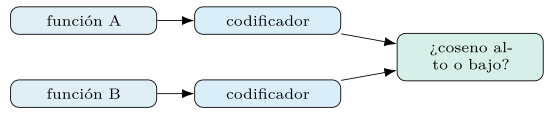
La figura 8.2 esquematiza ese entrenamiento siamés.
El reto: invariancia entre arquitecturas y compiladores.
La dificultad del BCSA está en qué debe ignorar. La misma función fuente, compilada para x86 y para ARM, o con optimización ligera y agresiva, produce binarios muy distintos byte a byte: registros diferentes, instrucciones reordenadas, bucles desenrollados, funciones en línea. Un buen embedding debe ser invariante a estos accidentes de compilación y sensible solo a la semántica: aproximar las dos compilaciones de la misma lógica y separar lógicas distintas.
Esa invariancia es la propiedad que se entrena (sección 8.2) y la que la representación intermedia favorece (sección 8.1). Es, además, la que da valor operativo al BCSA en seguridad: permite reconocer una función vulnerable conocida dentro de un binario nuevo aunque se haya recompilado para otra plataforma o con otras opciones, que es el caso real de la búsqueda de vulnerabilidades a escala.
El grado de invariancia alcanzado es, también, lo medido al evaluar un codificador (sección 8.2): se prueba si recupera como similares las compilaciones cruzadas de la misma función. Un codificador que solo casa compilaciones idénticas es inútil en la práctica; uno que generaliza a través de arquitecturas y optimizaciones es el que vale, y esa generalización no se supone, se comprueba. La figura 8.3 lo ilustra.
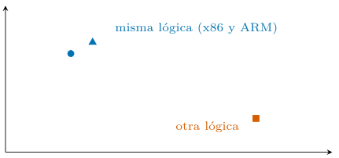
Escalar la similitud a repositorios enormes.
La búsqueda de vulnerabilidades a escala enfrenta repositorios de cientos de millones de funciones, y comparar una función contra todas es inviable sin una representación que lo permita. Los métodos recientes producen embeddings conscientes de la función y los condensan en códigos compactos —hashing— que hacen la búsqueda por similitud asumible sobre repositorios enormes (Liu et al. 2025). La idea es la del índice aproximado del capítulo 5, llevada a la escala del código binario.
El canje es el conocido entre exactitud y coste. Un hash compacto acelera la búsqueda y reduce el almacenamiento, a cambio de una similitud aproximada que puede perder coincidencias finas; un embedding denso completo es más preciso pero más caro de indexar y consultar. La elección depende del tamaño del repositorio y de la precisión exigida, y se decide midiendo (sección 8.2).
Para DSPy, la escala importa porque condiciona la recuperación que orquesta: sobre un repositorio enorme, el recuperador usa el índice aproximado, y el razonamiento del LLM opera sobre el puñado de vecinos que devuelve. La arquitectura recuperar-amplio-y-barato, razonar-estrecho-y-caro (capítulo 7) reaparece intacta, ahora sobre funciones binarias.
Cómo se mide la similitud de código.
El BCSA se evalúa como una tarea de recuperación (capítulo 7): dada una función consulta, ¿aparecen sus equivalentes entre los \(k\) vecinos recuperados? Las métricas son las de la recuperación —exhaustividad en los primeros \(k\), rango recíproco medio— aplicadas al banco de funciones conocidas. Un protocolo habitual mide la recuperación entre compilaciones cruzadas: indexar funciones compiladas de un modo y consultar con las mismas compiladas de otro (sección 8.2).
La cautela propia del dominio es el desequilibrio y la escasez de etiquetas. Las funciones equivalentes a una dada son poquísimas frente al repositorio entero, de modo que una métrica que no penalice los falsos positivos engaña (capítulo 4); y construir un conjunto de prueba con equivalencias conocidas exige compilar a propósito o etiquetar a mano, ambos costosos. Los conjuntos públicos de BCSA, con sus equivalencias por construcción, son el patrón de evaluación, y sobre ellos se reportan las cifras del capítulo.
Medir el codificador por separado del razonamiento, como en todo flujo (capítulo 7), aísla si un fallo del triaje viene de una recuperación pobre o de un razonamiento torcido. La recuperación BCSA se mide sobre conjuntos públicos de similitud de código binario con un codificador de código; construir ese banco —binarios compilados, desensamblado y pares de similitud— es un montaje aparte del servidor de texto de este libro.
LLM razonando sobre binarios
La segunda mitad de la línea central es el razonamiento. Un LLM, alimentado con el desensamblado de una función o con su representación intermedia, puede describir qué hace, señalar un patrón de vulnerabilidad o triar la gravedad de un hallazgo; la línea la abren trabajos que aplican modelos de lenguaje a la detección de vulnerabilidades sobre binarios despojados de símbolos (Hussain et al. 2025). No sustituye al análisis formal, pero acelera el triaje: convierte un volcado ilegible en una hipótesis en lenguaje natural que el analista verifica.
class AnalizarFuncion(dspy.Signature):
"""analiza una funcion desensamblada y senala riesgos."""
desensamblado: str = dspy.InputField(desc="ensamblador de la funcion")
proposito: str = dspy.OutputField(desc="que hace la funcion")
riesgo: Literal["bajo", "medio", "alto"] = dspy.OutputField()La firma tipada impone disciplina sobre una salida que, sin ella, sería prosa libre: obliga al modelo a comprometerse con un propósito y un nivel de riesgo verificables. La calidad de ese juicio se mide con el aparato del capítulo 4 contra un conjunto etiquetado por expertos, y se obtiene sobre un conjunto BCSA etiquetado por expertos, que exige la cadena de desensamblado y embeddings de código propia del dominio.
Qué entrada dar al modelo: ensamblador o decompilado.
Una decisión de diseño condiciona el razonamiento del modelo: qué forma del código se le entrega. El ensamblador desnudo es fiel pero ilegible —registros, saltos, direcciones—, y un modelo entrenado mayormente en lenguaje natural y código de alto nivel lo razona con dificultad. El decompilado —una reconstrucción en pseudo-C que produce un decompilador como Ghidra— es más cercano al lenguaje que el modelo conoce, y suele rendir mejor en el razonamiento, aunque introduce los errores del propio decompilador.
class AnalizarDecompilado(dspy.Signature):
"""analiza pseudo-C decompilado y senala riesgos."""
decompilado: str = dspy.InputField(desc="salida del decompilador")
proposito: str = dspy.OutputField()
riesgo: Literal["bajo", "medio", "alto"] = dspy.OutputField()El canje es entre fidelidad y legibilidad. El ensamblador no miente —es exactamente el código ejecutado— pero exige más del modelo; el decompilado es más comprensible pero añade una capa de posible error entre el binario real y el texto que el modelo lee. Una estrategia robusta da al modelo ambos —el decompilado para razonar, el ensamblador para verificar un detalle— y deja que el flujo decida cuál consultar, que es el terreno del análisis aumentado por herramientas. La tabla 8.1 opone las dos entradas.
| Ensamblador | Decompilado (pseudo-C) | |
|---|---|---|
| Fidelidad | exacta | introduce errores |
| Legibilidad | baja para el modelo | cercana a su lenguaje |
| Razonamiento | difícil | suele rendir mejor |
Análisis aumentado por herramientas.
El razonamiento sobre un binario rara vez se resuelve de una vez: el analista desensambla, mira las llamadas a la API, busca cadenas sospechosas, consulta una referencia. Un agente ReAct (capítulo 7) reproduce ese trabajo dándole al modelo herramientas de análisis —un desensamblador, un extractor de cadenas, una consulta al índice BCSA, una búsqueda en la literatura— que invoca según va descubriendo.
def desensamblar(direccion: str) -> str:
"""Devuelve el ensamblador de la funcion en una direccion."""
...
def cadenas(seccion: str) -> list[str]:
"""Extrae las cadenas legibles de una seccion del binario."""
...
analista = dspy.ReAct(
"binario -> informe, riesgo: float",
tools=[desensamblar, cadenas, buscar_similares, recuperar_lit])Este encuadre encaja con el dominio: el análisis de un binario es, por naturaleza, una investigación iterativa, y el bucle pensar-actuar-observar (capítulo 7) lo modela bien. Las herramientas son de solo lectura —desensamblar, extraer, consultar—, lo cual evita el riesgo de las acciones de efecto (sección 8.6); el agente investiga y propone, pero no modifica nada.
La optimización del agente —compilar sus prompts y la elección de herramientas contra casos etiquetados (capítulo 6)— le enseña qué herramienta conviene en cada situación, igual que a cualquier agente del capítulo anterior. El análisis de binarios se vuelve, así, un flujo de DSPy como los demás, con la particularidad de que su entrada es hostil por definición.
El razonamiento del LLM es una hipótesis.
Conviene insistir, por su importancia en seguridad, en la naturaleza del juicio de un LLM sobre un binario: es una hipótesis, no una prueba. El modelo puede afirmar con aplomo que una función valida una entrada cuando en realidad copia un buffer sin comprobar su tamaño, o pasar por alto una vulnerabilidad sutil escondida en un cálculo de índice. Su salida orienta al analista, no lo sustituye, y tratarla como veredicto es un error de consecuencias graves en este dominio.
El riesgo es mayor que en otros usos del libro porque el coste de un error es asimétrico y alto. Un falso negativo —declarar benigno un malware— deja pasar una amenaza; un falso positivo —marcar benigno como malicioso— ahoga al analista en ruido. Por eso el razonamiento se integra con verificación: la recuperación por similitud (sección 8.2) ancla la hipótesis en funciones conocidas, y las herramientas (sección 8.3) permiten comprobar un detalle concreto antes de concluir. La figura 8.4 fija el principio.
La defensa metodológica es la del libro entero: medir. Un juez calibrado y un conjunto etiquetado por expertos (capítulo 4) cuantifican cuánto se puede confiar en el razonamiento, y la honestidad de reportar esa fiabilidad —con sus falsos positivos y negativos— es la frontera entre una herramienta de apoyo responsable y una promesa temeraria. El razonamiento del LLM es valioso precisamente como hipótesis rápida que un humano verifica, no como oráculo.
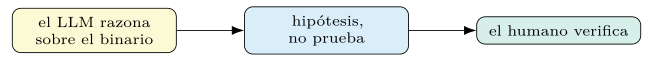
El pipeline DSPy y su optimización
Las dos mitades se componen en un flujo. Ante una función sospechosa, se recupera por embedding las funciones conocidas más similares —vulnerabilidades documentadas, muestras de familias—, y un módulo de razonamiento decide a la luz de esos vecinos. Es el patrón RAG del capítulo 7, trasladado del texto al código binario.
class TriajeBinario(dspy.Module):
def __init__(self, recuperador):
super().__init__()
self.recuperar = recuperador # indice de embeddings de codigo
self.analizar = dspy.ChainOfThought(AnalizarFuncion)
def forward(self, desensamblado):
similares = self.recuperar(desensamblado).passages
return self.analizar(desensamblado=desensamblado, contexto=similares)El pipeline hereda todas las virtudes de los capítulos previos: firma tipada, módulos componibles y, sobre todo, optimización de extremo a extremo. La recuperación y el razonamiento se ajustan a la vez contra una sola métrica, sin etiquetar las salidas intermedias. La figura 8.5 compone las dos mitades.
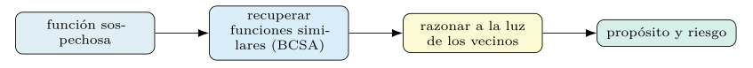
El RAG de arXiv, reutilizado.
El corpus de arXiv del capítulo 7 encuentra aquí un segundo uso. Dada una técnica de ofuscación detectada o una familia de malware identificada, el sistema recupera del índice los trabajos que la describen y razona sobre ellos: qué se sabe de esa técnica, qué defensas se han propuesto, qué la distingue. El análisis del binario y la literatura sobre él se unen en un mismo flujo.
class AnalisisInformado(dspy.Module):
def __init__(self, rag_arxiv, triaje):
super().__init__()
self.literatura = rag_arxiv # del capitulo 7
self.triaje = triaje
def forward(self, desensamblado):
t = self.triaje(desensamblado=desensamblado)
refs = self.literatura(t.proposito).passages
return dspy.Prediction(riesgo=t.riesgo, contexto=refs)La reutilización ilustra la composición que DSPy hace natural: un módulo del capítulo 7 se enchufa en un flujo nuevo sin reescribirlo, porque su contrato —una consulta, unos pasajes— no cambia.
Optimización con MIPROv2/GEPA y feedback textual.
El flujo se compila con los optimizadores del capítulo 6. MIPROv2 ajusta conjuntamente instrucciones y demostraciones (Opsahl-Ong et al. 2024); GEPA aprovecha el feedback textual —«falló porque confundió una comprobación de límites con una validación de entrada»— para mutar el prompt de forma informada (Agrawal et al. 2025). En un dominio donde los aciertos escasean y cada evaluación es cara, la eficiencia muestral de estos métodos es la diferencia entre una optimización viable y una inasumible.
El procedimiento de optimización sigue la disciplina de los capítulos previos. Se parte de un baseline —el flujo sin optimizar— y se compara contra él cada candidato, sobre la misma validación (capítulo 6); se arrancan demostraciones de las trazas acertadas (capítulo 5) antes de refinar las instrucciones; y se reserva una prueba etiquetada por expertos para la medición final, libre de contaminación (sección 8.12). El orden habitual —demostraciones primero, instrucciones después, o la búsqueda conjunta de MIPROv2— es el del capítulo 6, sin cambios por tratarse de binarios.
La mejora del pipeline optimizado sobre el baseline —que reutiliza el método de optimización de los capítulos 5 y 6— se mide sobre conjuntos públicos de BCSA y se reporta con su desviación. El código del capítulo, en codigo/cap08/, produce esas cifras. La lectura honesta de esa mejora —cuánto sube la calidad, a qué coste de compilación— es la que decide si la optimización compensa, igual que en todo el libro: el método no se adopta por moderno, sino porque la medición demuestra que rinde.
La vía de grafos: CFG, GNN y transformers
La línea central no agota el dominio. Un binario tiene estructura de grafo —el grafo de llamadas a API (ACG), el de flujo de control (CFG)—, y una red de atención sobre grafos la explota directamente. La elección moderna es GATv2, que corrige la atención estática de la GAT original con una atención dinámica más expresiva (Brody et al. 2022; Veličković et al. 2018); para capturar estructura global, los graph transformers —GPS, Graphormer— añaden atención de largo alcance sobre el grafo (Rampášek et al. 2022; Ying et al. 2021).
# la red de grafos se entrena APARTE (PyTorch Geometric); DSPy no la entrena
from torch_geometric.nn import GATv2Conv
# su salida (un embedding del grafo) alimenta la recuperacion que DSPy orquestaAquí la frontera de la sección 8.1 se hace explícita: la red de grafos se entrena con PyTorch Geometric, fuera de DSPy, y su embedding se incorpora al flujo como una representación más. DSPy orquesta; la red de grafos representa.
Los grafos de un binario: CFG y grafo de llamadas.
Conviene precisar qué grafos describen un binario, porque cada uno captura una estructura distinta. El grafo de flujo de control (CFG) representa una función: sus nodos son bloques básicos —secuencias de instrucciones sin saltos internos— y sus aristas, los saltos posibles entre ellos. Codifica cómo se ramifica y se itera la ejecución, y es la base del embedding de función derivado del flujo (sección 8.2) (Xu et al. 2017). La figura 8.6 muestra un CFG con su bucle.
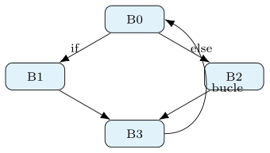
El grafo de llamadas (ACG) opera a otra escala: sus nodos son funciones y sus aristas, las llamadas entre ellas, a menudo enriquecidas con las llamadas a la API del sistema. Captura la arquitectura del programa y sus interacciones con el exterior —qué servicios del sistema usa—, una señal valiosa para el malware, cuya conducta se denota en las llamadas que hace: cifrar ficheros, abrir conexiones, manipular el registro.
Ambos grafos son representaciones estructuradas que una red de grafos explota directamente, sin linealizar (sección 8.1). La diferencia con la imagen es radical: el grafo es la estructura del programa, no un artefacto de una proyección arbitraria, y la proximidad en el grafo significa una relación real de control o de llamada. Esa fidelidad estructural hace de los grafos una vía seria, no una analogía forzada. La tabla 8.2 opone ambos grafos.
| Grafo | Nodos / aristas | Captura |
|---|---|---|
| CFG (flujo de control) | bloques / saltos | ramificación e iteración |
| ACG (llamadas) | funciones / llamadas | arquitectura y uso de la API |
Redes de atención sobre grafos: GAT y GATv2.
Una red de atención sobre grafos aprende la representación de un nodo agregando las de sus vecinos, ponderadas por una atención que decide cuánto pesa cada uno. Para un nodo \(i\) con vecindario \(\mathcal{N}(i)\), la representación se actualiza como \[\begin{equation} h_i' = \sigma\!\Bigl(\sum_{j\in\mathcal{N}(i)} \alpha_{ij}\, W h_j\Bigr), \end{equation}\] donde \(W\) es una transformación lineal aprendida y \(\alpha_{ij}\) es el peso de atención del vecino \(j\), normalizado sobre el vecindario. Aplicada a un CFG, cada bloque básico se representa atendiendo a los bloques con los que conecta, de modo que el embedding de la función emerge de la estructura de control.
La diferencia entre GAT y GATv2 está en cómo se calcula esa atención. La GAT original computa un peso que resulta estático: el orden de importancia de los vecinos es el mismo sea cual sea el nodo que consulta, una limitación de su expresividad (Veličković et al. 2018). GATv2 corrige el orden de las operaciones —aplica la no linealidad antes de la proyección de atención—, logrando una atención dinámica en la que distintos nodos pueden atender a distintos vecinos como más importantes (Brody et al. 2022). Para grafos de programa, donde la relevancia de un vecino depende del contexto, esa expresividad extra importa.
La salida de la red —un embedding del grafo— se entrena aparte (sección 8.1) y se incorpora al flujo de DSPy como una representación más, que alimenta la recuperación o el razonamiento. La red de grafos aporta la sensibilidad a la estructura; DSPy, la orquestación y el juicio.
Graph transformers: estructura global.
Las redes de atención sobre grafos agregan información local —el vecindario inmediato—, y apilar capas extiende ese alcance poco a poco, con el riesgo de diluir la señal en grafos grandes. Los graph transformers añaden atención de largo alcance: cada nodo puede atender, en principio, a cualquier otro, capturando dependencias globales que una agregación local tardaría muchas capas en propagar. Es la idea del transformer (capítulo 1) trasladada al grafo.
Dos representantes marcan la línea. GPS combina la agregación local de una red de grafos con la atención global de un transformer, equilibrando ambas escalas (Rampášek et al. 2022); Graphormer codifica la estructura del grafo —distancias, grados— como sesgos en la atención, de modo que el transformer respete la topología (Ying et al. 2021). En un grafo de llamadas grande, donde una función lejana puede ser decisiva —una rutina de cifrado invocada indirectamente—, esa visión global tiene valor.
El canje es el coste: la atención global escala mal con el tamaño del grafo, y un binario grande produce grafos enormes. La elección entre una red de grafos local y un graph transformer global es, como todo en el libro, empírica: se mide cuál recupera o clasifica mejor sobre el dominio concreto, sopesando la mejora contra el coste de cómputo. Ambos, entrenados fuera, son embedders para el flujo que DSPy orquesta.
Grafo, secuencia o embedding: cuál usar.
Las representaciones del capítulo no son excluyentes, y conviene saber cuándo pesa cada una. La secuencia de instrucciones —el ensamblador o su normalización (sección 8.2)— captura el orden local y es natural para un modelo de lenguaje. El grafo —CFG o de llamadas— captura la estructura de control y de interacción, invisible en la secuencia lineal. Y el embedding de función condensa una u otra en un vector para la recuperación a escala.
La regla orientativa sigue la estructura de la pregunta. Para razonar sobre el propósito de una función, la secuencia o el decompilado alimentan al LLM (sección 8.3); para reconocer una función equivalente a escala, el embedding y la recuperación (sección 8.2); para capturar la conducta estructural —qué llama a qué, cómo se ramifica—, el grafo y su red (sección 8.5). A menudo, las tres se combinan: un flujo recupera por embedding, razona con el LLM sobre el decompilado y enriquece con señales del grafo de llamadas.
Esa combinación es justo el terreno de DSPy: orquestar varias representaciones —cada una entrenada o calculada aparte— bajo un razonamiento que las integra y una métrica que las optimiza de extremo a extremo. La elección no es «grafo o secuencia», sino cómo componerlas para la tarea, y esa composición se declara, se mide y se mejora con el método del libro.
Modelos en el edge, empaquetado y análisis dinámico
No toda detección puede permitirse un LLM grande por API. En el edge —un endpoint, un dispositivo con recursos limitados— interesan modelos de lenguaje pequeños (SLM) que corran localmente, con latencia baja y sin enviar datos fuera. La abstracción LM del capítulo 2 hace trivial el cambio: el mismo programa se sirve con un modelo grande por API durante el desarrollo y con un SLM local en producción.
El compromiso es de calidad: un SLM acierta menos que un modelo grande, y la optimización de prompts —en particular, la destilación maestro–aprendiz del capítulo 5— se vuelve aquí decisiva para exprimir el modelo pequeño. Medir cuánta calidad se cede a cambio de la autonomía del edge exige el codificador de código en dos tamaños sobre el mismo banco BCSA, fuera del alcance del banco de texto local.
Empaquetado y ofuscación: el binario que se esconde.
El malware no se deja analizar de buen grado. El empaquetado comprime o cifra el código real y lo envuelve en un cargador que lo desempaqueta en memoria al ejecutarse; el análisis estático del binario empaquetado ve solo el cargador, no la carga útil (sección 8.1). La ofuscación va más allá: inserta código muerto, sustituye instrucciones por secuencias equivalentes, aplana el flujo de control o cifra las cadenas, todo para que el binario haga lo mismo pero parezca distinto y resista el análisis.
Estas técnicas atacan justamente las representaciones del capítulo. La ofuscación que reescribe instrucciones degrada los embeddings de código (sección 8.2); la que aplana el flujo de control distorsiona el CFG y su grafo (sección 8.5); el empaquetado oculta todo hasta la ejecución. Un sistema que solo mira el binario estático puede ser ciego ante un malware bien empaquetado, por sofisticada que sea su representación.
La respuesta del campo es combinar el análisis estático con el dinámico (sección 8.6) y entrenar las representaciones para que sean robustas a la ofuscación, exponiéndolas a variantes ofuscadas durante el entrenamiento —la misma idea que robustecía un prompt ante la inyección mostrándole ataques (capítulo 6)—. La figura 8.7 muestra el binario que se esconde. Para un flujo de DSPy, el empaquetado es un límite de la entrada: conviene detectarlo —un binario con entropía altísima y pocas cadenas legibles denota empaquetado— y encaminar esos casos al análisis dinámico antes de razonar sobre un código que no es el real.
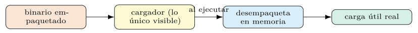
Análisis estático y dinámico.
El análisis del capítulo ha sido, hasta aquí, estático: examina el binario sin ejecutarlo. Su ventaja es la seguridad —no se corre código potencialmente malicioso— y la cobertura —ve todo el código, no solo el camino ejecutado—; su límite es el empaquetado y la ofuscación, que ocultan el código real (sección 8.6). El análisis dinámico ejecuta el binario en un entorno aislado —una sandbox— y observa su conducta: qué ficheros toca, qué conexiones abre, qué llamadas al sistema hace.
Los dos enfoques son complementarios, no rivales. El dinámico ve la conducta real —incluido el código desempaquetado en memoria— pero solo del camino que la ejecución recorre, y un malware consciente de estar en una sandbox puede ocultarse. El estático ve todo el código pero no su conducta. Combinarlos —desempaquetar dinámicamente y luego analizar estáticamente la carga revelada, o contrastar la conducta observada con la estructura del código— cubre las carencias de cada uno. La tabla 8.3 los contrasta.
| Estático | Dinámico | |
|---|---|---|
| Qué ve | todo el código | la conducta del camino ejecutado |
| Ventaja | seguro, cobertura total | ve el código desempaquetado |
| Límite | ofuscación y empaquetado | un solo camino; evasión |
Para DSPy, ambos producen señales que el razonamiento integra. La traza de ejecución de una sandbox —llamadas al sistema, conexiones— es una entrada más para un módulo de razonamiento, igual que el desensamblado estático, y un agente (sección 8.3) puede orquestar ambos: ejecutar en sandbox, observar, desensamblar la carga útil y razonar sobre el conjunto. El valor de DSPy es, otra vez, componer fuentes heterogéneas bajo un razonamiento medible, no producir ninguna de ellas.
Binarios adversariales y evasión.
El dominio de este capítulo es adverso por definición: quien escribe el malware quiere que el analizador falle. Más allá de la ofuscación genérica (sección 8.6), existen ataques dirigidos contra el analizador automático: perturbaciones del binario que preservan su función pero inducen al clasificador a etiquetarlo benigno —inyectar secciones inocuas, imitar los rasgos del software legítimo, envenenar el contexto que el LLM lee—. Es la inyección de prompts (capítulo 7) llevada al binario.
La defensa parte de asumir la adversidad, no de ignorarla. Entrenar las representaciones y optimizar los prompts con ejemplos adversariales —binarios manipulados con su etiqueta real— endurece el sistema, igual que en los capítulos anteriores: cuanto no se mide frente al ataque queda sin defensa. Y el contenido que el LLM razona —cadenas extraídas, decompilado— debe tratarse como dato no confiable (capítulo 7): un binario puede contener cadenas diseñadas para que el modelo, al leerlas, concluya cuanto el atacante quiere.
La honestidad obliga a reconocer que la carrera es abierta. Ninguna defensa cierra el problema, porque el adversario se adapta a la defensa conocida, y un sistema de detección es tan bueno como reciente sea su entrenamiento frente a las técnicas en uso (sección 8.13). DSPy no resuelve esta carrera, pero su disciplina —medir frente a ataques, versionar, reentrenar ante la deriva (capítulo 10)— es justo la postura metodológica que un sistema en un entorno adverso necesita.
Datos, un análisis trazado y una guía de decisión
Todo el aparato del capítulo descansa en datos etiquetados, y en este dominio son escasos y caros. Etiquetar una función como vulnerable, o un binario como perteneciente a una familia de malware, exige un analista experto, y los conjuntos de calidad son un recurso valioso. A esto se suma el desequilibrio estructural: el software benigno supera con creces al malicioso, y una vulnerabilidad concreta es rarísima frente al código sano.
Estas dos realidades condicionan la evaluación. El desequilibrio obliga a métricas que no se dejen engañar por la clase mayoritaria —\(F_1\) por clase, el coeficiente de Matthews (capítulo 4)—, porque un detector que dice siempre «benigno» acierta el noventa y nueve por ciento y no sirve de nada. La escasez de etiquetas hace valiosa la generación de demostraciones por arranque (capítulo 5) y el uso de un teacher fuerte que etiquete trazas para un student barato, paliando la falta de anotación manual.
Los conjuntos públicos de BCSA —con equivalencias conocidas por construcción (sección 8.2)— y los repositorios de malware etiquetado son el patrón de evaluación, y conviene usarlos con la disciplina de partición del capítulo 5: deduplicar, separar familias entre entrenamiento y prueba, y vigilar que una variante trivial no contamine la medición. En seguridad, una evaluación inflada por contaminación no es solo un error académico: es una falsa sensación de protección.
Un análisis trazado: de la función al veredicto.
Conviene ver el flujo completo sobre un caso. Ante una función sospechosa desensamblada, el pipeline recupera por embedding las funciones conocidas más similares (sección 8.2), razona sobre ellas y emite un veredicto con su nivel de riesgo, anclado en los vecinos recuperados.
# 1. recuperar funciones conocidas similares (indice BCSA)
similares = recuperador(func_sospechosa).passages
# -> ["CVE-2021-... strcpy sin comprobacion de limites", ...]
# 2. razonar sobre la funcion a la luz de sus vecinos
pred = triaje(desensamblado=func_sospechosa, contexto=similares)
# pred.proposito -> "copia un buffer de longitud controlada por la entrada"
# pred.riesgo -> "alto" (similar a un desbordamiento conocido)
# 3. enriquecer con literatura sobre la tecnica detectada
refs = rag_arxiv(pred.proposito).passagesLa traza ilustra la composición del capítulo: la recuperación BCSA ancla el juicio en código conocido, el razonamiento del LLM formula la hipótesis, y el RAG de arXiv (sección 8.4) la sitúa en la literatura. Ningún paso por sí solo basta —la recuperación no explica, el razonamiento alucina, la literatura no ve el binario—, pero su composición produce un informe que el analista verifica.
El valor está, una vez más, en la verificabilidad. El veredicto cita las funciones similares que lo sustentan y los trabajos que lo contextualizan, de modo que el analista puede comprobar la hipótesis en lugar de aceptarla a ciegas (sección 8.3). La cifra de calidad de este flujo sobre un conjunto etiquetado exige el banco BCSA con desensamblado y embeddings de código, aparte del código de texto del capítulo.
Una guía de la representación a la arquitectura.
Las piezas del capítulo se combinan según la pregunta. La tabla 8.4 orienta qué representación y qué componente convienen a cada tarea de análisis, recordando que DSPy orquesta todas ellas pero no entrena ninguna (sección 8.1).
| Tarea | Representación / componente |
|---|---|
| hallar funciones equivalentes a escala | embedding BCSA + recuperación |
| describir qué hace una función | decompilado + razonamiento LLM |
| capturar conducta estructural | CFG / grafo de llamadas + GNN |
| malware empaquetado | análisis dinámico (sandbox) |
| investigación abierta e iterativa | agente ReAct + herramientas |
| detección en el edge | SLM local + destilación |
La lectura refuerza la tesis del capítulo: no hay una representación única, sino una adecuada a cada pregunta, y el valor de DSPy es componerlas —recuperación, razonamiento, grafo, literatura— bajo una métrica que optimiza el conjunto. La elección concreta, como siempre, se confirma midiendo sobre la tarea, no por la sofisticación del componente.
Tareas: vulnerabilidades, ingeniería inversa y antivirus
Conviene distinguir dos tareas que el capítulo ha tratado juntas, porque sus exigencias difieren. La detección de vulnerabilidades busca, dentro de software en general —a menudo benigno—, funciones con fallos explotables: un desbordamiento de buffer, una validación ausente. La clasificación de malware** decide si un binario es malicioso y a qué familia pertenece. La primera mira código sano en busca de errores; la segunda, código diseñado para dañar y para esconderse.
Las consecuencias para el sistema son distintas. La detección de vulnerabilidades se apoya con fuerza en la similitud (sección 8.2): una función vulnerable se reconoce por su parecido con vulnerabilidades conocidas, y el BCSA a escala (sección 8.2) es su herramienta natural. La clasificación de malware lidia con la ofuscación y la evasión activas (sección 8.6), porque el código quiere pasar desapercibido, y combina más el análisis dinámico (sección 8.6) con el estático.
Ambas, sin embargo, comparten el andamiaje de DSPy: recuperar por similitud, razonar con un LLM, medir contra datos etiquetados. La diferencia está en qué representación pesa y qué amenaza domina, no en el método. Reconocer la distinción evita el error de evaluar una con el conjunto de la otra, y de esperar que una técnica afinada para reconocer vulnerabilidades en código benigno funcione igual sobre malware que se defiende del análisis. La tabla 8.5 resume ambas exigencias.
| Vulnerabilidades | Malware | |
|---|---|---|
| Mira | código sano con fallos | código que quiere dañar |
| Se apoya en | la similitud (BCSA) | lo dinámico + lo estático |
| Amenaza | — | ofuscación y evasión |
Asistencia a la ingeniería inversa.
Más allá de clasificar, los modelos asisten la ingeniería inversa: el trabajo lento de entender qué hace un binario sin su código fuente. Un LLM puede proponer nombres con sentido para funciones y variables que el decompilador dejó anónimas, resumir el propósito de un módulo, o sugerir qué estructura de datos manipula una rutina. No reemplaza al ingeniero inverso, pero le ahorra el trabajo mecánico de descifrar lo evidente, dejándole el difícil.
renombrar = dspy.ChainOfThought(
"decompilado -> nombre_funcion, descripcion, variables_renombradas")
# convierte sub_401a2f(int a, int b) en validar_longitud(buffer, limite)El valor está en la escala y la velocidad. Un binario tiene miles de funciones anónimas, y anotarlas a mano es inviable; un flujo que propone anotaciones para todas, que el ingeniero revisa y corrige, acelera el análisis en un orden de magnitud. La salida tipada y verificable (capítulo 2) mantiene la disciplina: cada anotación es una hipótesis sobre una función concreta, auditable contra el código.
Esta asistencia hereda la cautela del razonamiento sobre binarios (sección 8.3): un nombre propuesto puede errar, y un resumen puede pasar por alto el matiz que importa. Por eso la anotación se ofrece como sugerencia editable, no como verdad establecida, y el ingeniero mantiene el control. DSPy aporta aquí la composición —decompilar, recuperar funciones similares ya anotadas, proponer nombres— y la optimización de esas propuestas contra anotaciones de referencia.
Frente al antivirus tradicional.
Conviene situar este enfoque frente a la detección clásica por firmas. Un antivirus tradicional casa el binario contra una base de firmas —patrones exactos de malware conocido—: es rápido, preciso sobre lo conocido y con pocos falsos positivos, pero ciego ante lo nuevo, porque una variante que cambia unos bytes ya no casa la firma. Es el mismo defecto que la artesanía de prompts frente a la optimización (capítulo 1): una regla rígida no generaliza.
El enfoque del capítulo —embeddings de semántica y razonamiento— generaliza donde la firma falla: reconoce una variante por su parecido semántico aunque sus bytes difieran (sección 8.2), y razona sobre código no visto antes. El precio es el coste —calcular embeddings y llamar a un LLM es más caro que casar una firma— y los falsos positivos, que un sistema semántico genera más que una firma exacta.
La conclusión sensata no es sustituir, sino componer. Las firmas resuelven barato y sin error el grueso de lo conocido; el análisis semántico se reserva para los casos que las firmas no atrapan —variantes nuevas, malware ofuscado, código sospechoso sin firma—. Es la arquitectura de criba barata y análisis caro de los capítulos anteriores (capítulo 7), aplicada a la defensa: la firma es el primer filtro, el razonamiento la segunda línea. La figura 8.8 dibuja esa composición.
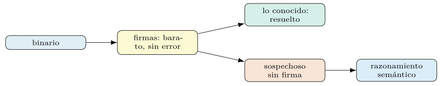
Explicabilidad y procedencia del veredicto.
En seguridad, un veredicto sin explicación vale poco: un analista que recibe «malicioso, riesgo alto» sin más no puede actuar ni verificar. La explicabilidad —que el sistema justifique su juicio— y la procedencia —que cite en qué se apoya— son exigencias del dominio, no adornos. El razonamiento de un LLM (sección 8.3) las facilita: su cadena de pensamiento es, ella misma, una explicación, y la recuperación por similitud ancla el veredicto en funciones conocidas concretas.
La firma tipada del capítulo 2 se aprovecha para exigir esa justificación como salida estructurada: junto al riesgo, las funciones similares que lo sustentan, los indicadores detectados y las referencias de literatura (sección 8.4). Un veredicto así es verificable —el analista comprueba cada apoyo—, a diferencia de la salida opaca de un clasificador que solo emite una etiqueta. La procedencia convierte una afirmación en una hipótesis auditable.
Esta transparencia tiene, además, un valor operativo y legal. Una decisión automática que afecta a un sistema —bloquear un binario, alertar de un incidente— debe poder justificarse ante quien la cuestione (capítulo 7), y un veredicto que cita su evidencia cumple ese requisito. La optimización, eso sí, debe premiar explicaciones fieles, no plausibles: una justificación convincente pero falsa es peor que ninguna (capítulo 6), y la métrica ha de medir la fidelidad de la explicación, no solo su elocuencia.
Análisis a escala e integración.
El análisis de un binario suelto es un caso de laboratorio; la realidad es analizar muchos —un repositorio de software, el flujo de binarios que entra en una organización, los artefactos de una canalización de integración continua—. A esa escala, el flujo del capítulo se ejecuta por lotes y en paralelo (capítulo 7), con la criba barata por delante (sección 8.8) para reservar el análisis caro a lo que de verdad lo merece.
La integración en una canalización de desarrollo abre un uso preventivo: analizar cada dependencia y cada artefacto antes de desplegarlo, marcando las funciones que se parecen a vulnerabilidades conocidas (sección 8.2) para revisión. Es la detección de vulnerabilidades (sección 8.8) movida al momento de la construcción, donde corregir es barato, en lugar de tras el despliegue, donde es caro.
La sostenibilidad a escala exige las palancas de coste de los capítulos previos: la caché para no reanalizar lo idéntico, el índice aproximado para la similitud (sección 8.2), y los modelos pequeños donde basten (sección 8.6). Un sistema que analiza millones de funciones no puede permitirse un LLM grande por cada una; la arquitectura sensata reserva el razonamiento caro para el puñado que la criba barata marca como sospechoso, y ese diseño es, de nuevo, una decisión de ingeniería guiada por la medición.
Una lista de comprobación.
Como en los capítulos anteriores, conviene condensar el método de construir un sistema de análisis de binarios con DSPy en una secuencia de comprobaciones.
Distinguir qué se entrena (codificadores, redes de grafos) de qué se orquesta (el flujo de DSPy) (sección 8.1).
Elegir la representación que preserve la estructura pertinente a la tarea (secciones 8.1 y 8.5).
Detectar el empaquetado y encaminar esos casos al análisis dinámico (secciones 8.6 y 8.6).
Medir la recuperación BCSA por separado del razonamiento (sección 8.2).
Usar métricas robustas al desequilibrio; cuidar la contaminación entre particiones (sección 8.7).
Tratar el binario y su contenido como entrada hostil; evaluar frente a ejemplos adversariales (sección 8.6).
Exigir veredictos explicables y con procedencia, no etiquetas opacas (sección 8.8).
Integrar la criba barata por firmas con el análisis semántico caro (sección 8.8).
Recorrida la lista, el análisis de binarios con DSPy deja de ser una colección de componentes sueltos y se vuelve un sistema medible, explicable y mantenible. El cierre del capítulo —y de la parte técnica del libro— afronta con honestidad los límites actuales de estos sistemas.
Destilación, multimodalidad y el analista en el bucle
El despliegue en el edge (sección 8.6) exige exprimir un modelo pequeño hasta acercarlo a uno grande, y dos técnicas lo permiten. La destilación traslada el conocimiento de un modelo fuerte a uno débil: el fuerte —el teacher— genera trazas de análisis acertadas, y con ellas se afina el pequeño —el student—, justo el BootstrapFinetune del capítulo 5. En un dominio con etiquetas escasas (sección 8.7), que el teacher genere los datos de entrenamiento es doblemente valioso.
La cuantización reduce la precisión numérica de los pesos —de coma flotante a enteros de pocos bits— para que el modelo quepa y corra en un dispositivo modesto, a cambio de una pérdida de calidad que conviene medir. Combinada con métodos de ajuste de bajo rango (capítulo 5) (Hu et al. 2022), permite especializar y comprimir un modelo para el análisis en el endpoint sin la infraestructura de un modelo grande.
El papel de DSPy en esto es indirecto pero real. No cuantiza ni destila por sí mismo —eso ocurre fuera (sección 8.1)—, pero su optimización de prompts exprime el modelo pequeño antes de plantearse tocar sus pesos (capítulo 6), y a menudo un SLM con un prompt bien compilado basta donde se temía necesitar uno grande. La secuencia sensata es optimizar el prompt primero, destilar después si hace falta, y cuantizar al final para el despliegue, midiendo en cada paso cuánta calidad se cede.
Multimodalidad: combinar representaciones.
Ninguna representación agota el binario (sección 8.5), y los sistemas más capaces las combinan: el embedding BCSA para recuperar similares, el decompilado para que el LLM razone, el grafo de llamadas para la conducta estructural, la literatura para el contexto. DSPy es el pegamento que las une bajo un razonamiento y una métrica, orquestando fuentes que se entrenan o calculan por separado.
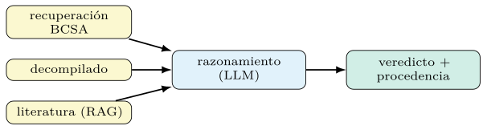
La figura 8.9 resume esa composición. Su virtud es que cada fuente compensa las carencias de las otras: la recuperación ancla, el decompilado explica, el grafo capta la conducta, la literatura contextualiza (sección 8.7). Su reto es la fusión —cómo combinar señales heterogéneas en el contexto del razonador sin saturarlo (capítulo 7)—, que se resuelve, como todo, midiendo qué combinación rinde mejor sobre la tarea.
Esta multimodalidad anticipa la dirección del libro hacia los sistemas que integran texto, código y otras señales bajo una misma orquestación. El análisis de binarios es, en este sentido, un banco de pruebas exigente: combina la representación más hostil —un binario adverso— con la necesidad de integrar varias vistas de él, y DSPy ofrece el método para hacerlo con disciplina.
Optimización con feedback en el dominio binario.
La optimización del pipeline (sección 8.4) gana especial valor aquí por la escasez de datos y la dureza del dominio. GEPA, con su feedback textual (capítulo 6), aprovecha que un fallo de análisis se puede explicar: «confundió una comprobación de límites con una validación de entrada», «pasó por alto que el índice proviene de la entrada del usuario». Esa crítica concreta orienta la mutación del prompt mucho mejor que una nota numérica (Agrawal et al. 2025).
El feedback de calidad, en este dominio, lo aporta a menudo el analista experto: al corregir un veredicto erróneo, explica por qué se equivocó, y esa explicación alimenta la siguiente compilación. Se cierra así un bucle entre el humano y el sistema (sección 8.9) en el que cada fallo corregido mejora el prompt, convirtiendo la revisión —trabajo que de todas formas se hace— en señal de optimización.
La figura 8.9 resume esa fusión de fuentes.
La eficiencia muestral importa porque cada evaluación es cara: ejecutar el pipeline sobre un binario implica desensamblar, recuperar y razonar, y los conjuntos etiquetados son pequeños. Los optimizadores que extraen más de cada ejemplo —MIPROv2 por su búsqueda dirigida (Opsahl-Ong et al. 2024), GEPA por su crítica densa— son, por tanto, los adecuados, y su frugalidad es lo que hace viable optimizar en un dominio donde no abundan ni los datos ni el presupuesto.
El analista en el bucle.
El sistema de este capítulo no sustituye al analista de seguridad: lo amplifica. El razonamiento del LLM es una hipótesis a verificar (sección 8.3), y el veredicto, una propuesta con su procedencia (sección 8.8); la decisión final, en los casos que importan, la toma una persona. Diseñar el sistema en torno a esa colaboración —máquina que tría y propone, humano que verifica y decide— es más honesto y más útil que prometer una automatización total que el dominio no permite.
El bucle tiene dos sentidos. De la máquina al humano: el sistema filtra el volumen inabarcable de binarios y funciones, y eleva al analista solo lo sospechoso, con un informe que acelera su juicio. Del humano a la máquina: las correcciones del analista —veredictos enmendados, explicaciones de los fallos— son datos que mejoran el sistema en la siguiente compilación (sección 8.9). La revisión humana deja de ser un coste y se vuelve, además, la fuente de la mejora.
Este encuadre fija las expectativas correctas. La pregunta no es si el sistema iguala al experto —no lo hace—, sino si multiplica su alcance: cuántos más binarios puede triar un analista asistido, con qué fiabilidad, y cuánto antes detecta lo importante. Medido así (capítulo 4), el valor del sistema es real y cuantificable, sin caer en la promesa exagerada que el dominio, por su adversidad, castiga sin piedad.
Conjuntos públicos y reproducibilidad.
La credibilidad de cualquier resultado en este dominio descansa en conjuntos públicos y en la reproducibilidad. Los conjuntos de BCSA con equivalencias conocidas (sección 8.2) y los repositorios de malware etiquetado permiten comparar métodos sobre el mismo terreno, y reportar contra ellos —en lugar de sobre un conjunto privado— vuelve una cifra verificable por terceros. El libro reporta sobre conjuntos públicos por esa razón.
La reproducibilidad exige, además, fijar cuanto varía: la versión del codificador de embeddings, la del modelo de lenguaje, las semillas de la optimización, la partición de los datos (capítulo 5). Un resultado de análisis de binarios que no especifica estas piezas no es reproducible, y en un campo que avanza deprisa —codificadores nuevos cada año (sección 8.2)— esa disciplina permite saber si una mejora viene del método o de un componente actualizado.
El código del capítulo, en codigo/cap08/, fija estas piezas y produce las cifras marcadas como pendientes a lo largo del texto. Versionar el flujo compilado —prompts, índices, configuración— junto a las versiones de los componentes entrenados aparte cierra el círculo de reproducibilidad que el libro exige a todo resultado, y que en seguridad, donde una cifra inflada es una falsa protección, resulta innegociable.
Codificador, coste, falsos positivos y priorización
Así como la calidad de un RAG dependía del embedder (capítulo 7), la del BCSA depende del codificador de código que produce los embeddings de función (sección 8.2). Y la elección no es única: hay codificadores derivados del grafo de flujo de control (Xu et al. 2017), otros que tratan el ensamblador como lenguaje (Gu et al. 2022), y otros conscientes de la función para escalar a repositorios enormes (Liu et al. 2025). Cada uno canjea invariancia, coste de cómputo y tamaño del embedding.
Los criterios de elección son los del capítulo de recuperación, adaptados al binario. La invariancia entre arquitecturas y optimizaciones (sección 8.2) es el rasgo decisivo: un codificador que no generaliza a través de compilaciones es inútil en la práctica. El coste de codificar y el tamaño del vector condicionan la escala alcanzable (sección 8.2). Y la cobertura de arquitecturas —¿soporta ARM, x86, las que importan?— acota su aplicabilidad.
La regla, como siempre, es medir y no fiarse de la novedad. Se evalúa cada codificador candidato por su recuperación entre compilaciones cruzadas (sección 8.2) sobre el dominio propio, y se elige el que mejor rinde por su coste. Para DSPy, el codificador es un embedder intercambiable (sección 8.1): cambiarlo no toca el flujo, solo la pieza que produce los vectores, y comparar dos es cuestión de reindexar y medir. La comparación de codificadores de código sobre los conjuntos del libro exige indexar cada uno sobre binarios desensamblados, un montaje BCSA propio del dominio.
Coste y latencia del análisis.
El análisis de un binario es caro en cómputo, y conviene desglosar dónde. El preprocesado —desensamblar, levantar a representación intermedia, construir el grafo (secciones 8.1 a 8.5)— consume herramientas especializadas y tiempo. La codificación proyecta cada función a su embedding, un coste único por función indexada. Y el razonamiento del LLM, el sumando más caro por llamada, se paga por cada función que llega al análisis profundo.
La arquitectura de criba (sección 8.8) es la respuesta a ese coste. La mayoría de las funciones se descartan barato —por firma, por una similitud baja con cualquier patrón sospechoso—, y solo el puñado restante paga el razonamiento caro. Sobre un repositorio de millones de funciones, esta cascada —filtro barato, análisis caro selectivo— es la diferencia entre un sistema viable y uno inasumible, y reaparece idéntica desde el capítulo de recuperación.
Las palancas de los capítulos previos se combinan: la caché evita reanalizar lo idéntico, el índice aproximado abarata la similitud a escala (sección 8.2), el procesamiento por lotes y en paralelo (capítulo 7) aprovecha el cómputo, y un modelo pequeño en el edge (sección 8.6) recorta el coste por llamada donde la calidad lo permita. Estimar la factura antes de lanzar un análisis a escala —funciones por su coste de preprocesado, codificación y razonamiento— evita sorpresas, como en todo el libro. La tabla 8.6 desglosa los tres sumandos.
| Componente | Cuándo se paga |
|---|---|
| Preprocesado | desensamblar, levantar IR, construir el grafo |
| Codificación | un coste único por función indexada |
| Razonamiento (LLM) | el más caro, por función al análisis profundo |
Falsos positivos y fatiga de alertas.
En la detección de seguridad, el falso positivo no es un error inocuo: es el enemigo operativo. Un sistema que marca demasiados binarios benignos como sospechosos sepulta al analista en alertas, y la fatiga de alertas resultante hace que las verdaderas se pierdan entre el ruido. Un detector con una tasa de acierto altísima pero muchos falsos positivos puede ser, en la práctica, peor que uno más modesto pero preciso, porque el analista deja de atenderlo.
Esta realidad reordena las prioridades de la evaluación (capítulo 4). En un dominio tan desequilibrado (sección 8.7), la exactitud global engaña, y la precisión —qué fracción de las alertas es real— pesa tanto como la exhaustividad —qué fracción de las amenazas se detecta—. El coeficiente de Matthews (Matthews 1975), robusto al desequilibrio, y el análisis explícito del canje entre falsos positivos y negativos son las herramientas adecuadas, no la exactitud a secas.
La optimización debe, por tanto, incorporar el coste asimétrico en su métrica (capítulo 6): penalizar el falso positivo según su coste real en atención del analista, y el falso negativo según el riesgo que deja pasar. Un sistema optimizado contra una métrica que ignora la fatiga de alertas será, por bien que puntúe en el papel, inservible en un centro de operaciones real. Medir lo verdaderamente importante, una vez más, es la diferencia entre una demostración y una herramienta. La figura 8.10 encadena esa espiral.
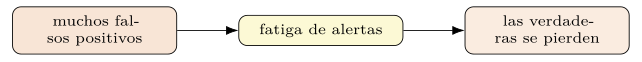
Triaje y priorización de hallazgos.
Detectar no basta; hay que priorizar. Un análisis a escala produce más hallazgos de los que un equipo puede atender, y el valor del sistema está tanto en encontrar las amenazas como en ordenarlas por urgencia. La priorización combina varias señales: la gravedad estimada —un CVSS calculado (capítulo 7)—, la confianza del veredicto, la explotabilidad, y el contexto —un binario en un servidor expuesto urge más que el mismo en un sistema aislado—.
class Priorizar(dspy.Signature):
"""ordena un hallazgo por urgencia de revision."""
hallazgo: str = dspy.InputField(desc="veredicto, gravedad, contexto")
urgencia: Literal["critica", "alta", "media", "baja"] = dspy.OutputField()
justificacion: str = dspy.OutputField()La priorización es, ella misma, una tarea que DSPy optimiza contra el juicio de los analistas: qué orden de revisión habrían elegido los expertos, aprendido de casos etiquetados. Bien hecha, convierte una lista inabarcable de hallazgos en una cola de trabajo donde lo urgente sube y lo trivial espera, multiplicando el efecto del analista (sección 8.9).
Esta capa de priorización cierra el sistema como herramienta operativa, no como mero clasificador. Integra la detección (secciones 8.2 y 8.3), el cálculo de riesgo, la explicación (sección 8.8) y el orden de atención en un flujo que un equipo de seguridad puede usar de verdad. Y, como todo en el libro, su calidad se mide —¿coincide su orden con el del experto?— antes de confiar en ella.
Familias de malware y detección de lo desconocido
Más allá de decidir si un binario es malicioso, interesa saber a qué familia pertenece —de qué linaje de malware es variante—, porque la familia dicta la respuesta: qué hace, cómo se propaga, qué defensas existen. La clasificación de familias se apoya en la similitud (sección 8.2): variantes de una misma familia comparten código y estructura, y quedan próximas en el espacio de embeddings pese a las mutaciones que las distinguen.
El reto propio es que las familias evolucionan: una variante nueva puede alejarse de las conocidas lo bastante como para no encajar limpiamente en ninguna, y aparecen familias enteras antes inexistentes. Por eso la clasificación de familias no es un problema cerrado de etiquetas fijas, sino uno abierto donde el agrupamiento —descubrir familias nuevas por la cercanía de sus embeddings— complementa a la clasificación contra familias conocidas. El sistema debe poder decir «esto se parece a la familia X» y también «esto no se parece a nada conocido» (sección 8.11).
Para DSPy, la clasificación de familias es una tarea de las del capítulo 3, ahora sobre embeddings de código en lugar de texto: recuperar las muestras conocidas más similares y razonar sobre la familia a la luz de ellas, con la cautela del desequilibrio (sección 8.7) —algunas familias son raras— y de la evolución, que exige refrescar el banco de muestras como se refresca cualquier índice (capítulo 7).
Detectar lo desconocido.
El malware que más daña es, a menudo, el que nadie ha visto: una amenaza de día cero sin firma ni muestra previa. Detectarlo es, por definición, algo que la similitud con lo conocido no logra sola, y exige un cambio de pregunta: no «¿a qué se parece?», sino «¿es esto anómalo?». La detección de novedad busca binarios que se desvían de lo normal —del software benigno conocido— aunque no encajen en ninguna familia maliciosa.
La señal aprovechable es, otra vez, la geometría del espacio de embeddings. Un binario cuyo embedding cae lejos de todo lo conocido —benigno y malicioso— es sospechoso por su rareza, y merece el análisis caro (sección 8.10) aunque ninguna firma lo marque. La distancia al vecino más próximo en el banco es una medida de novedad barata que encamina los casos raros al razonamiento profundo, complementando la criba por firmas (sección 8.8).
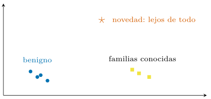
El razonamiento del LLM aporta aquí un valor distinto. Frente a un binario sin precedentes, no hay vecinos informativos que recuperar, y el juicio recae en la capacidad del modelo de razonar sobre el código en abstracto —qué hace esta función, parece esto un cifrador de ficheros— a partir de su semántica, no de su parecido con lo conocido (sección 8.3). Es el escenario donde el razonamiento generaliza más allá del banco, con todo su valor y todo su riesgo de alucinación (sección 8.3): una hipótesis sobre lo nunca visto, que un humano debe verificar, pero que ningún sistema basado solo en firmas podría siquiera formular. La figura 8.11 sitúa esa rareza en el espacio de embeddings.
Flujo frente a monolito, conjuntos y 1-day a escala
Cabe preguntarse por qué descomponer el análisis en un flujo —recuperar, razonar, calcular (sección 8.4)— en lugar de entrenar un único clasificador de extremo a extremo que, del binario, prediga directamente el veredicto. La respuesta repite la tesis del capítulo de flujos (capítulo 7), ahora con fuerza añadida por el dominio.
Un clasificador monolítico tiene tres desventajas aquí. Es opaco: emite una etiqueta sin explicación ni procedencia (sección 8.8), inaceptable en seguridad. Es rígido: actualizar su conocimiento exige reentrenar, mientras que el flujo se actualiza refrescando el índice de funciones conocidas (sección 8.11). Y es ávido de datos: entrenar un clasificador de binarios de calidad exige enormes conjuntos etiquetados, escasos en este dominio (sección 8.7), mientras que el flujo aprovecha la recuperación y un puñado de demostraciones.
El flujo, en cambio, separa las responsabilidades que conviene aislar. La recuperación aporta el conocimiento actualizable; el razonamiento, la explicación; el cálculo, la exactitud. Cada pieza se mide y se mejora por separado (sección 8.2), y el conjunto se optimiza de extremo a extremo (sección 8.4) sin renunciar a la transparencia. La descomposición no es solo una preferencia de ingeniería: en un dominio adverso, con datos escasos y exigencia de explicación, es la arquitectura que de verdad funciona. La tabla 8.7 enfrenta ambas.
| Monolito | Flujo (DSPy) | |
|---|---|---|
| Explicación | opaco, solo etiqueta | razonamiento y procedencia |
| Actualizar | reentrenar | refrescar el índice |
| Datos | ávido de etiquetas | recuperación + pocas demostr. |
Conjuntos de datos del dominio.
La evaluación seria exige conjuntos concretos, y el dominio tiene los suyos. Para la similitud de código binario, los conjuntos construidos compilando un mismo corpus de fuentes con distintos compiladores, arquitecturas y niveles de optimización proveen equivalencias conocidas por construcción (sección 8.2): se sabe qué funciones son la misma, y se mide si el sistema las recupera entre compilaciones cruzadas (sección 8.2). Para la clasificación de malware, existen colecciones etiquetadas por familia de uso común en la investigación, como la que popularizó la representación visual del binario que abrió el capítulo (Nataraj et al. 2011).
Cada conjunto trae sus sesgos, y conviene conocerlos. Un conjunto construido compilando software de código abierto no representa al malware ofuscado del mundo real (sección 8.6); uno de malware antiguo no refleja las técnicas actuales (sección 8.11). Reportar sobre varios conjuntos, y declarar sus limitaciones, es más honesto que una cifra única sobre un conjunto favorable, y es la práctica que el libro sigue.
La advertencia que cierra el asunto es la de la contaminación, agravada en este dominio. Las variantes de una familia comparten código, y si unas caen en entrenamiento y otras casi idénticas en prueba, la evaluación se infla sin que el sistema generalice de verdad (capítulo 5). Separar las familias entre particiones —no solo las muestras— es la única partición honesta, y omitirla produce las cifras espectaculares y falsas que tanto abundan en la literatura de detección. En seguridad, esa falsa confianza no es un desliz académico: es una vulnerabilidad operativa (sección 8.10).
Buscar vulnerabilidades conocidas a escala.
El uso que mejor justifica todo el aparato del capítulo es la búsqueda de vulnerabilidades conocidas —de un día— en binarios desplegados. El problema es real y masivo: cuando se publica un parche de una biblioteca, miles de binarios en producción siguen incorporando la versión vulnerable, a menudo estáticamente enlazada y recompilada de mil formas distintas. Encontrar dónde sigue viva una vulnerabilidad ya parcheada es una tarea de similitud a escala (sección 8.2): localizar la función vulnerable conocida dentro de un universo de binarios.
La similitud de código binario está hecha para esto. Se toma la función vulnerable —la versión sin parchear— como consulta, se proyecta a su embedding, y se busca en el índice del repositorio las funciones más próximas (sección 8.2), que son candidatas a portar la misma vulnerabilidad aunque se hayan compilado para otra arquitectura o con otras opciones (sección 8.2). La invariancia del embedding es justo la propiedad que reconoce la función a través de sus mil recompilaciones, algo que una firma exacta no lograría (sección 8.8).
# buscar donde sigue viva una vulnerabilidad parcheada
func_vulnerable = desensamblar_funcion(cve_2021_xxxx, version="sin parchear")
candidatos = indice_repositorio.buscar(embedder(func_vulnerable), k=50)
# razonar sobre cada candidato: porta la vulnerabilidad o ya esta parcheado?
for c in candidatos:
v = analizar(desensamblado=c.codigo, contexto=[func_vulnerable])
if v.riesgo == "alto":
reportar(c, justificacion=v.proposito) # con procedenciaAquí el razonamiento del LLM (sección 8.3) añade el matiz que la similitud sola no da: distinguir un candidato que de verdad porta la vulnerabilidad de uno que ya incorpora el parche, que se le parece mucho pero corrige el fallo. La recuperación encuentra los sospechosos; el razonamiento confirma cuáles lo son y por qué, con la procedencia que un equipo de seguridad necesita para actuar (sección 8.8). La cobertura —qué fracción de las instancias vulnerables halla el sistema— se mide sobre un conjunto de 1-day conocido, que requiere binarios reales con su verdad de campo, fuera del banco de texto de este libro.
Este caso condensa el valor del capítulo. Combina la representación que respeta la semántica (sección 8.1), la similitud invariante a la compilación, el razonamiento que confirma y explica, y la escala que hace el problema abordable —todo orquestado por DSPy y medido contra datos—. Es, además, una tarea de impacto directo: cada instancia de una vulnerabilidad conocida que el sistema localiza es un agujero menos esperando a ser explotado, y ese valor operativo, no la sofisticación técnica, es la razón de ser del capítulo.
Evaluación, límites actuales y direcciones
El capítulo cierra con honestidad sobre los límites. El razonamiento de un LLM sobre un binario es una hipótesis, no una prueba: puede alucinar un propósito o pasar por alto una vulnerabilidad sutil, y por eso se integra como apoyo al analista, no como veredicto. La evaluación exige conjuntos etiquetados por expertos, escasos y caros, y métricas que respeten el desequilibrio (capítulo 4), porque el malware es raro frente al software benigno.
El límite más peligroso es la falsa confianza. Un modelo que explica su veredicto con elocuencia (sección 8.8) puede ser persuasivo y estar equivocado, y en seguridad esa combinación —seguridad aparente, error real— es la más costosa. Por eso el sistema se diseña en torno a la verificación humana (sección 8.9) y se evalúa con la sospecha de que sus aciertos en validación pueden no generalizar a un adversario que se adapta (sección 8.6). La honestidad sobre cuanto el sistema ignora es, aquí, una propiedad de seguridad.
Hay un límite estructural que conviene nombrar: la equivalencia de programas es, en el caso general, indecidible. Decidir si dos binarios hacen exactamente lo mismo, o si una función contiene una vulnerabilidad explotable, no admite una solución algorítmica completa, y los métodos del capítulo —similitud aproximada, razonamiento heurístico— son, por necesidad, aproximaciones. Reconocerlo sitúa las expectativas: el objetivo no es la certeza, imposible, sino una aproximación útil y medible que amplíe el alcance del analista. La tabla 8.8 reúne estos límites.
| Límite | Consecuencia |
|---|---|
| El razonamiento es una hipótesis | apoyo al analista, no veredicto |
| Etiquetas escasas y caras | evaluación difícil; desequilibrio |
| Falsa confianza | explicación elocuente pero errada |
| Equivalencia indecidible | solo aproximaciones útiles y medibles |
Las direcciones abiertas son varias y activas. Mejores embeddings de código, más invariantes a la ofuscación (sección 8.6); la fusión más estrecha de la vía de grafos con el razonamiento de LLM (sección 8.9); la robustez frente a binarios adversariales (sección 8.6); y los agentes de ingeniería inversa (sección 8.8) que automatizan parte del análisis profundo. Ninguna está resuelta, y el campo se mueve deprisa (sección 8.2).
DSPy no resuelve estos problemas, y conviene no atribuirle más de su aportación real (sección 8.1). No entrena codificadores, no desensambla, no cuantiza; orquesta esas piezas bajo un razonamiento y las optimiza contra una métrica. Pero esa aportación —componer fuentes heterogéneas, medir el conjunto, mejorarlo con método— es justo la que faltaba en un campo rico en representaciones y pobre en disciplina de evaluación. El andamiaje que ofrece es el del libro entero, aplicado al dominio más hostil.
Con esto se cierra la parte técnica. El recorrido fue de menos a más: del prompt aislado a su anatomía, de la clasificación a la evaluación rigurosa, de la optimización de demostraciones e instrucciones a los flujos de varios pasos, y de ahí al análisis de binarios, donde todas las piezas se combinan sobre una entrada adversa. El hilo que las une es uno: no ajustar prompts a mano, sino declararlos, medirlos y optimizarlos —programarlos—, también, y sobre todo, donde más cuesta. El capítulo siguiente lleva esa disciplina a la práctica profesional: desplegar, mantener y operar estos sistemas en producción.
Lecturas recomendadas
Liu et al. (2025) y Gu et al. (2022): embeddings de funciones para BCSA a gran escala.
Xu et al. (2017): el precursor que deriva el embedding del grafo de flujo de control.
Brody et al. (2022): la atención dinámica sobre grafos.
Hussain et al. (2025): LLM para detectar vulnerabilidades en binarios despojados de símbolos.
Brosolo et al. (2025): la crítica a la representación visual del binario.